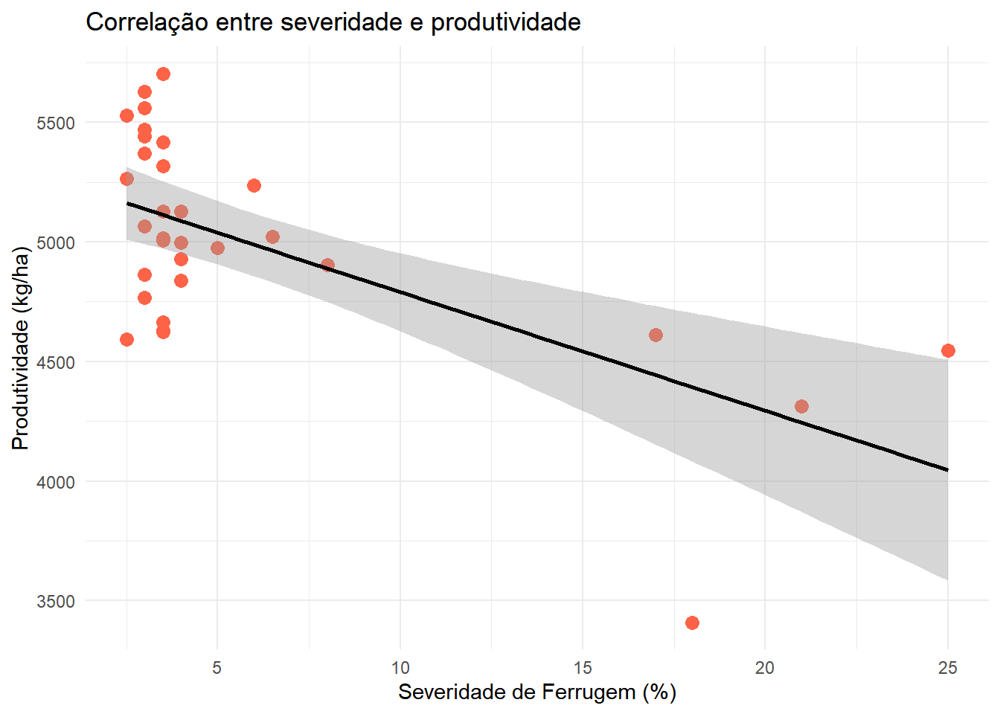

Pearson's product-moment correlation
data: campo$FER and campo$PROD
t = -4.3949, df = 30, p-value = 0.0001277
alternative hypothesis: true correlation is not equal to 0
95 percent confidence interval:
-0.7999565 -0.3544981
sample estimates:
cor
-0.6258321
Gráfico de dispersão com linha de tendência
Code
ggplot(campo, aes(x = FER, y = PROD)) +geom_point(color ="tomato", size =3) +geom_smooth(method ="lm", color ="black") +theme_minimal() +labs(x ="Severidade de Ferrugem (%)",y ="Produtividade (kg/ha)",title ="Correlação entre severidade e produtividade" )
`geom_smooth()` using formula = 'y ~ x'

Source Code
---title: "Exemplo de Correlação"author: "Taís A. Machado dos Santos"date: 2025-06-21format: html: toc: true toc-depth: 2 code-tools: true code-fold: true---## IntroduçãoEste é um exemplo de análise de correlação entre severidade de ferrugem (FER) e produtividade (PROD) em ensaio de campo.## Código```{r}library(gsheet)library(tidyverse)url_campo <-"https://docs.google.com/spreadsheets/d/1bq2N19DcZdtax2fQW9OHSGMR0X2__Z9T/edit?gid=866852711#gid=866852711"campo <-gsheet2tbl(url_campo)```## Correlação```{r}cor(campo$FER, campo$PROD)cor.test(campo$FER, campo$PROD)```## Gráfico de dispersão com linha de tendência```{r}ggplot(campo, aes(x = FER, y = PROD)) +geom_point(color ="tomato", size =3) +geom_smooth(method ="lm", color ="black") +theme_minimal() +labs(x ="Severidade de Ferrugem (%)",y ="Produtividade (kg/ha)",title ="Correlação entre severidade e produtividade" )```